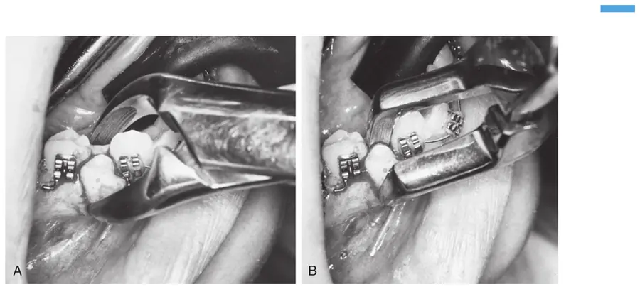

نسخه استخراجشده؛ ترجمه یا تأیید علمی انجام نشده است. وضعیت: captured
یک واقعیت آناتومیک که این عارضه را توضیح میدهد: استخوان کورتیکال لینگوال روی ریشهی مولرها، هرچه به سمت خلف پیش میرود نازکتر میشود. برای مثال، مولرهای سوم مندیبل اغلب در استخوان لینگوال پوشاننده دهیسنس دارند و ممکن است در واقع پیش از عمل هم در فضای سابمندیبولار نشسته باشند.

پس: ریشههای شکستهی مولر مندیبل که با فشار آپیکالی برداشته میشوند، میتوانند از میان صفحهی کورتیکال لینگوال به فضای سابمندیبولار جابهجا شوند. و نکتهی هشداردهنده این است که حتی مقادیر کم فشار آپیکالی هم میتواند به جابهجایی ریشه به آن فضا بینجامد.
پس پیشگیری، عمدتاً یک چیز است: پرهیز از همهی فشارهای آپیکالی هنگام برداشتن ریشههای مندیبل.
و اگر ریشه ناپدید شد — روال «یک تلاش»: الواتورهای مثلثی مثل الواتور Cryer معمولاً برای الویت کردن ریشههای شکستهی مولر مندیبل به کار میروند. اگر ریشه حین برداشتن ناپدید شود، دندانپزشک باید یک تلاش واحد برای برداشتنش بکند:
عمل قطعی معمول: رفلکت کردن یک فلپ بافت نرم در سطح لینگوال مندیبل و دیسکسیون آرام موکوپریوست پوشاننده تا وقتی نوک ریشه پیدا شود.
و همان منطقی که در سینوس دیدیم، اینجا هم تکرار میشود: مثل دندانهای جابهجاشده به سینوس ماگزیلا، اگر قطعهی ریشه کوچک باشد و پیش از عمل عفونی نبوده باشد، جراح دهان و فک و صورت ممکن است ترجیح دهد ریشه را در جای خودش رها کند — چون بازیابی جراحی ریشه ممکن است عملی گسترده باشد یا خطر آسیب جدی به عصب لینگوال داشته باشد.
گاهی تاج یک دندان، یک کراون پروتزی، یا یک دندان کامل در اوروفارنکس گم میشود.
اولین اقدام، وضعیتدهی است: بیمار باید به سمت جراح چرخانده شود و در وضعیتی قرار گیرد که دهانش تا حد ممکن رو به کف باشد. بیمار باید تشویق شود سرفه کند و دندان را روی زمین تف کند.
و اگر با وجود این تلاشها دندان بلعیده یا آسپیره شد — یک نشانهی افتراقی ساده:
در هر دو حالت: بیمار باید به بخش اورژانس منتقل شود، و رادیوگرافی قفسهی سینه و شکم گرفته شود تا موقعیت مشخص دندان تعیین شود.
اگر دندان آسپیره شده باشد: باید مشاوره دربارهی امکان برداشتن دندان با برونکوسکوپ درخواست شود. و مدیریت فوری آسپیراسیون، حفظ راه هوایی و تنفس بیمار است. اکسیژن کمکی ممکن است مناسب باشد اگر نشانههای دیسترس تنفسی دیده شوند.
اگر دندان بلعیده شده باشد: بسیار محتمل است که ظرف ۲ تا ۴ روز از دستگاه گوارش عبور کند. چون دندانها معمولاً دندانهدار یا تیز نیستند، عبور بیمانع تقریباً در همهی موقعیتها رخ میدهد.
ولی یک احتیاط باقی میماند: ممکن است عاقلانه باشد که بیمار به اورژانس برود و رادیوگرافی شکم گرفته شود تا تأیید شود دندان واقعاً در دستگاه گوارش است و نه در دستگاه تنفسی. رادیوگرافیهای پیگیری احتمالاً لازم نیستند، چون دندانهای بلعیدهشده سرانجام همراه مدفوع دفع میشوند.
عارضهای که هر دندانپزشکی باور دارد هرگز نمیتواند برایش پیش بیاید — ولی بهطور غافلگیرکنندهای اغلب پیش میآید: کشیدن دندان اشتباه. این معمولاً شایعترین علت دعواهای قصور پزشکی علیه دندانپزشکان است. کشیدن دندان اشتباه هرگز نباید رخ دهد، اگر توجه مناسب به برنامهریزی و اجرای عمل جراحی داده شود.
چرا رخ میدهد — سه زمینه:
سه راه اصلی پیشگیری: برنامهریزی دقیق پیش از عمل، ارتباط روشن با دندانپزشک ارجاعدهنده، و ارزیابی بالینی توجهآمیز دندانی که قرار است برداشته شود، پیش از به کار بردن الواتور و فورسپس. و بهصورت چکلیست: توجهت را روی عمل متمرکز کن، با بیمار و دستیار بررسی کن که دندان درست برداشته میشود، تصاویر و پرونده را بررسی کن، و سپس دوباره بررسی کن.
و اگر رخ داد — مدیریت، بسته به زمان تشخیص:
و تعهد ارتباطی: وقتی دندان اشتباه کشیده میشود، مهم است که بیمار — یا والدین یا سرپرستان او اگر بیمار صغیر است — و هر دندانپزشک دیگری که در مراقبت بیمار دخیل است، مثل ارتودنتیست، آگاه شوند.
در بعضی موقعیتها ارتودنتیست ممکن است بتواند طرح درمان را طوری تنظیم کند که کشیدن دندان اشتباه تنها یک تغییر جزئی در طرح لازم داشته باشد. و اگر مورد اصلاً به درمان ارتودنسی مربوط نبوده، یک ترمیم متکی بر ایمپلنت دندانی میتواند وضعیت دندانی بیمار را کاملاً به حالت پیش از کشیدن ناخواسته برگرداند.